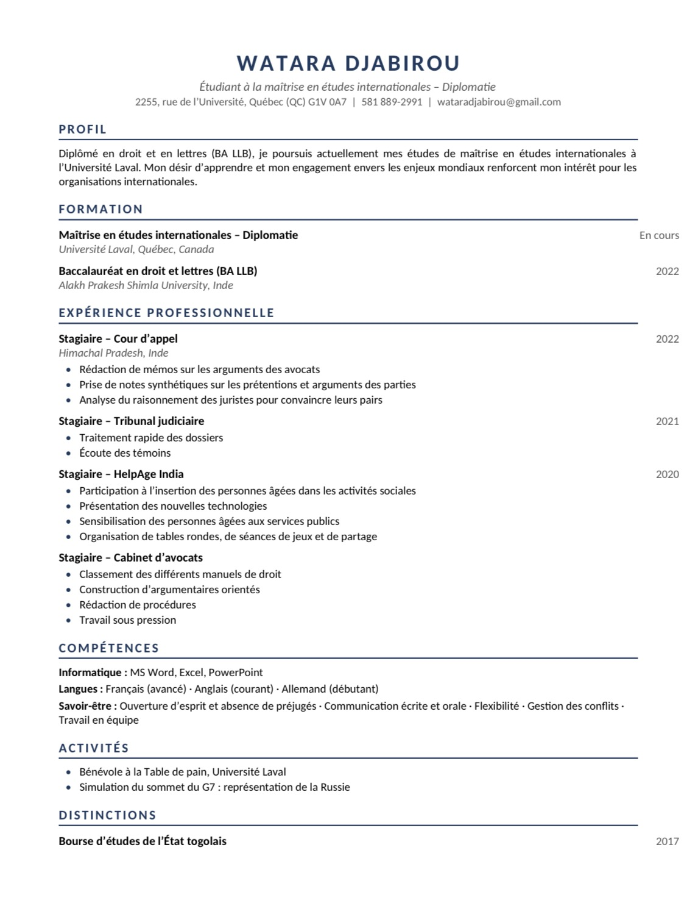

DJABIROU WATARA
Bienvenue Dans Mon Univers .
Diplômé en droit et en lettres (BA LLB), je poursuis actuellement une maîtrise en études internationales, spécialisée en diplomatie, à l’Université Laval. Mon parcours, entre l’Inde, le Togo et le Canada, m’a donné une réelle ouverture sur le monde et une grande capacité d’adaptation. Mes stages en milieu judiciaire m’ont appris à analyser des arguments complexes, à rédiger avec rigueur et à travailler sous pression. Aujourd’hui, animé par le désir d’apprendre et par un engagement fort envers les enjeux mondiaux, je souhaite mettre mes compétences au service des organisations internationales. Bienvenue sur mon site !
Mes réalisations
De mes stages en milieu judiciaire en Inde à la simulation du sommet du G7, où j’ai représenté la Russie, chaque expérience a renforcé mon sens de l’analyse, de l’argumentation et du travail en équipe. J’ai également eu la chance d’être soutenu par la bourse d’études de l’État togolais, et je m’investis comme bénévole à la Table de pain de l’Université Laval.
Mon CV
Juriste de formation et étudiant en diplomatie, j’ai construit un parcours entre l’Inde, le Togo et le Canada, mêlant stages en milieu judiciaire, engagement bénévole et études internationales. Vous trouverez ci-dessous le détail de ma formation, de mes expériences et de mes compétences.

Me joindre
Une question, une opportunité ou simplement l’envie d’échanger sur la diplomatie et les enjeux internationaux ? N’hésitez pas à m’écrire, je vous répondrai avec plaisir.